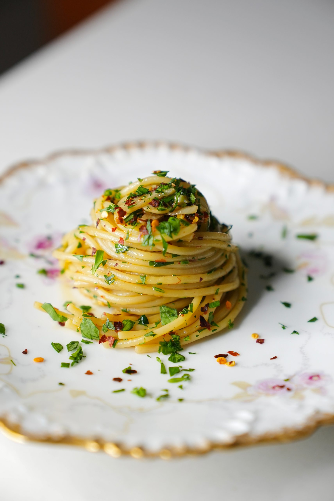

Welcome to the finest recipe of Aglio-Olio

Lo and behold, you are about to witness the most amazing recipe
Ingredients
- 1/2 pound spaghetti
- Generous kosher salt for pasta water
- 1/3 cup good extra virgin olive oil
- 3-5 cloves sliced garlic
- 1 teaspoon red chili pepper flakes (or less to taste)
- 1/4 cup minced fresh parsley (about 1 cup of leaves not chopped)
- Bring water to a boil in a large pot.
Add a very generous amount of kosher salt; at least 3 tablespoons.
Drop in the pasta and set a timer for 5 minutes.
- Add half the olive oil to a large cold pan
with the garlic and red chili flakes.
Heat over a low-medium flame, shaking the pan occasionally.
You want the garlic to get a light golden brown color
and gentle bubbles in the oil, but not too much.
- When the 5 minutes are up,
add the rest of the oil to your garlic and red pepper flakes.
Either use tongs to transfer the pasta directly to the pan with the garlic and oil,
or save at least 1 cup of pasta water BEFORE draining the spaghetti and adding it.
- Add about 1/4-1/3 cup of pasta water (eyeball it),
and mix the spaghetti in the garlic/oil/pasta water mixture energetically.
Keep cooking the pasta in the pan 4-5 more minutes (until it is al dente),
adding a few more dashes of pasta water if the pan looks dry.
- Add the parsley, mix, and serve.